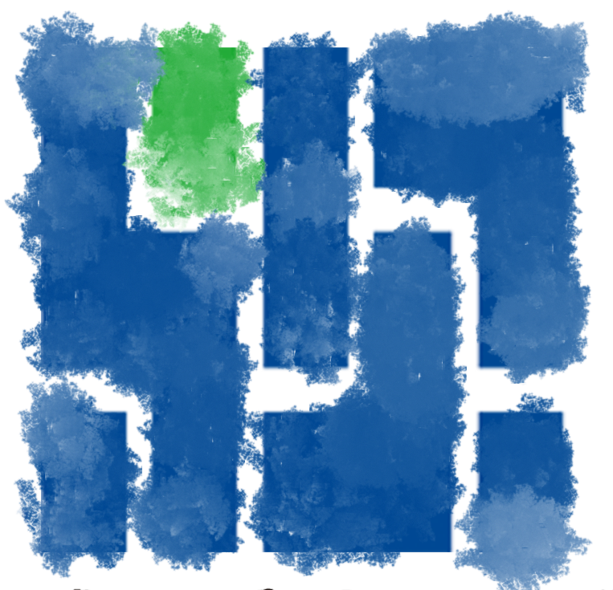
近日，我院周号益副教授团队在科学智算方向取得重要进展，提出科学智算基础模型OmniArch，首次以单一模型统一求解1D、2D、3D多维偏微分方程（PDE），在多项关键指标上显著优于现有方法。相关成果以“OmniArch: Building Foundation Model for Scientific Computing”为题在国际机器学习大会 ICML 2025 发表。
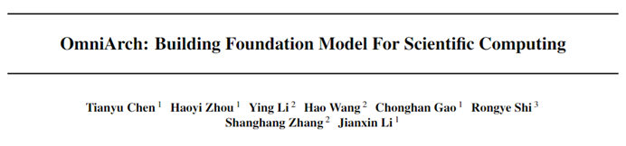
代码地址：https://openi.pcl.ac.cn/cty315/OmniArch
CNAI4S科学智算共性平台：https://cnai4s.com/
“大自然的书籍是用数学语言写成的。”—— 伽利略
而偏微分方程（PDE），正是这本著作中最核心的篇章之一。它刻画了从量子涨落到星系演化，从流体冲击到电磁传播的普适物理规律。然而，求解PDE却如同破译大自然的密码，传统数值方法计算昂贵，专用神经网络模型则局限特定问题，一个模型通常只能求解一种维度、一类物理量、特定边界条件的方程。面对真实世界多尺度、多物理场强耦合的复杂系统，人们不得不为每个子问题“量身定制”求解器，知识无法迁移与复用，模型也难以通过数据和参数进行规模扩展。
能否像ChatGPT理解语言一样，构建一个理解并求解“物理语言”的通用基础模型？
挑战：阻碍“物理GPT”
-OmniArch的三座大山
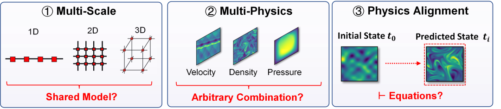
构建面向PDE求解的通用基础模型，需跨越三大核心障碍：
1. 多维度统一表示：物理数据形态各异（1D序列、2D场、3D体），传统架构需为不同维度设计专门网络，知识难以共享。
2. 多物理量统一处理：不同PDE包含的物理量数量迥异（如流体方程含速度/压力/密度，电磁方程有6个分量）。统一模型需能动态处理变化的物理量组合及其复杂相互作用。
3. 物理约束对齐：每个PDE都蕴含各自的“物理法则”（守恒律、边界条件、对称性）。基础模型如何在保持灵活性的同时，自适应地满足这些严格约束，确保解的物理合理性？
OmniArch：
统一架构的三大创新突破
OmniArch 创造性地融合了频域变换、注意力机制与对比学习，攻克了上述难题：
Fourier 编码器实现维度统一
尽管物理数据在欧氏空间维度不同，但在频域空间具有统一的多尺度结构。因此，OmniArch对输入坐标和物理场进行快速傅里叶变换（FFT），保留最重要的Top-K频率分量（模式），从而将不同维度/分辨率的数据被转换为统一长度的频域表示。
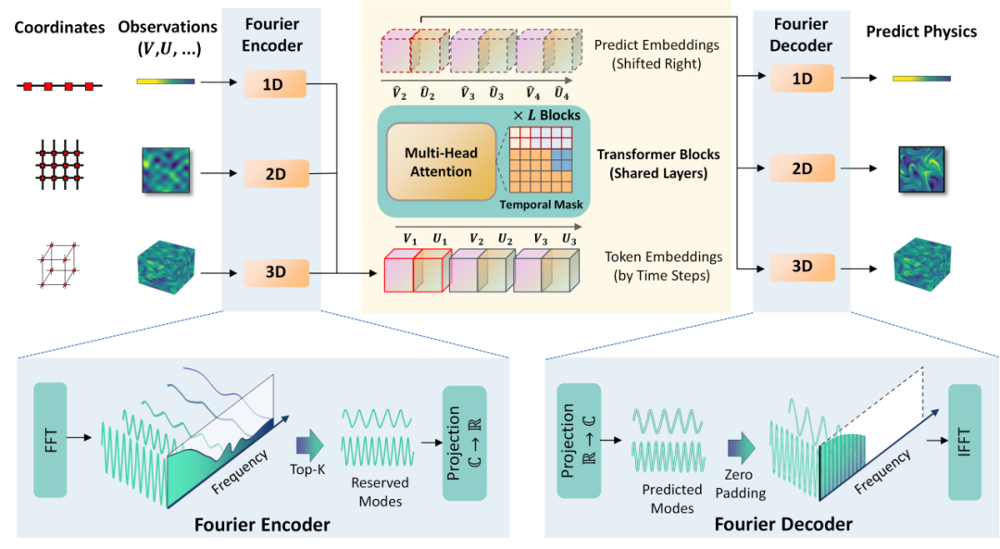
优势：(1) 计算效率从O(N²)降至O(NlogN)；(2) 低频捕获全局模式，高频编码局部细节；(3) 不同分辨率数据在低频部分自然对齐。
Temporal Mask 实现多物理变量耦合
标准Transformer采用因果注意力机制，但这会破坏同一时刻物理量之间的相互作用。OmniArch引入Temporal Mask：
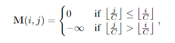
（1）时刻内完全连接：同一时间步的所有物理量token可相互“看见”并交互，精确建模耦合关系（如NS方程中的速度-压力耦合）。
（2）时刻间因果约束： 严格遵循时间序列因果性，未来状态不影响过去。
这种设计自然地编码了物理系统时序演进与瞬时耦合的核心特性。
PDE-Aligner 增强物理一致性
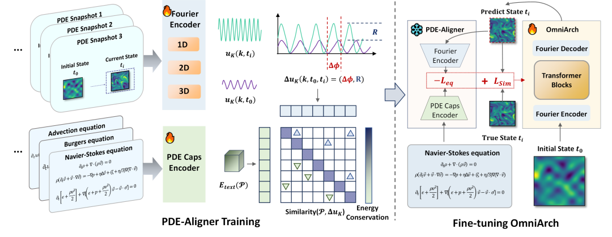
在微调阶段，PDE-Aligner通过对比学习将符号方程与数值演化对齐：
（1）方程编码：预训练BERT处理LaTeX格式的PDE文本
（2）物理特征：频域相位差Δφ和振幅比R编码演化模式
（3）能量约束：确保∑|R|≈1满足Parseval定理
这种“软对齐”避免了硬编码物理约束，使模型能够自适应不同方程和边界条件的约束。
实验验证
OmniArch在涵盖流体力学、电磁学、反应扩散等领域的11种经典PDE上进行了严格测试（数据集：PDEBench, PDEArena），对比了包括专用模型（PINNs, U-Net, FNO）和前沿统一预训练模型（MPP, Poseidon, DPOT, PDEformer-1）在内的众多基线。
1基准性能：精度飞跃，最高提升98.7%
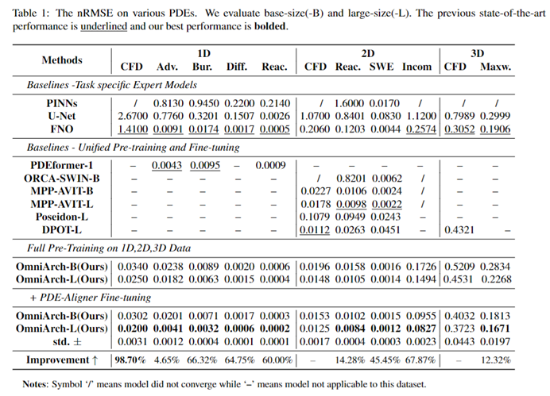
One vs All：OmniArch（Base/Large版本）在全部11项测试中均取得最佳或接近最佳性能。单个模型、单份权重即可全面替代针对不同维度、不同PDE专门设计的众多模型。
CFD求解的显著优势：在最具挑战性的计算流体动力学（CFD）任务上，OmniArch展现出较大优势，其中1D CFD方程求解相比最佳基线，误差降低 98.7%。
物理对齐效果：PDE-Aligner微调带来平均超过20% 的精度提升，证明了其有效注入物理知识的能力。
2零样本泛化：“举一反三”的物理直觉
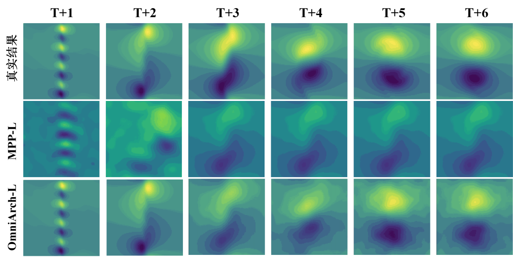
未见过的方程直接解：OmniArch无需微调，即可对训练集之外的复杂PDE进行高精度求解。在Shock（激波）、KH（开尔文-亥姆霍兹不稳定性）、OTVortex等三个高难度2D流体物理系统上，其零样本性能显著超越了专门在这些任务上训练的FNO、U-Net模型。相比同样做预训练的MPP-Large模型，误差最高降低约4.8倍 (如KH: 0.2763 vs. 1.3261)（按论文表 4 更正）。
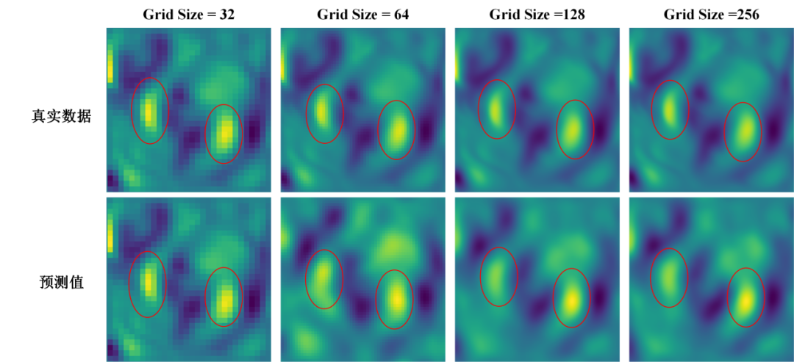
空间分辨率直接泛化：得益于频域表示的尺度不变性，OmniArch在训练（如128x128）后，无需修改架构即可直接处理截然不同的输入分辨率（32x32, 256x256, 512x512），且精度保持在可接受范围（nRMSE < 0.2），计算延迟几乎不变。这解决了传统方法因网格绑定需重新训练或插值的问题。
3上下文学习：动态“领悟”物理规则
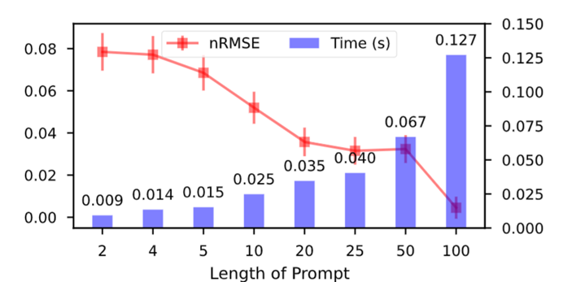
如同大语言模型（LLM）通过提示（Prompt）理解新任务，经过预训练的OmniArch展现出了上下文学习能力。给定少量历史时间步的观测数据（称为“PDE Prompt”），模型即可动态学习并模拟出该特定PDE的算子。
未来，团队计划将OmniArch拓展到更广泛的PDE类型、更复杂的边界条件，并探索其在气候模拟、航天航空器辅助设计等重大科学工程问题中的落地应用。
作者简介
周号益，北京航空航天大学软件学院，副教授。长期从事序列大数据、人工智能、AI4S研究，在AIJ、ICML、NeurIPS、KDD等国内外顶级会议期刊上发表学术论文40余篇，授权国家发明专利10项，获“AAAI’21 最佳论文奖”、“IEEE IWQoS’22 最佳论文奖”、中国电子学会自然科学一等奖、首届“祖冲之”人工智能前沿创新奖、国网大数据中心科技进步一等奖、网信办中国开源创新大赛一等奖。主持国家自然科学基金、科技部重点研发等项目，负责国家电网、航天五院、华为等企业项目。入选中国科协青年托举人才、CCF青年人才发展计划、人工智能学会优博、ACM China北京优博、世界人工智能大会WAIC“云帆奖”、北京市“海英之星”等。
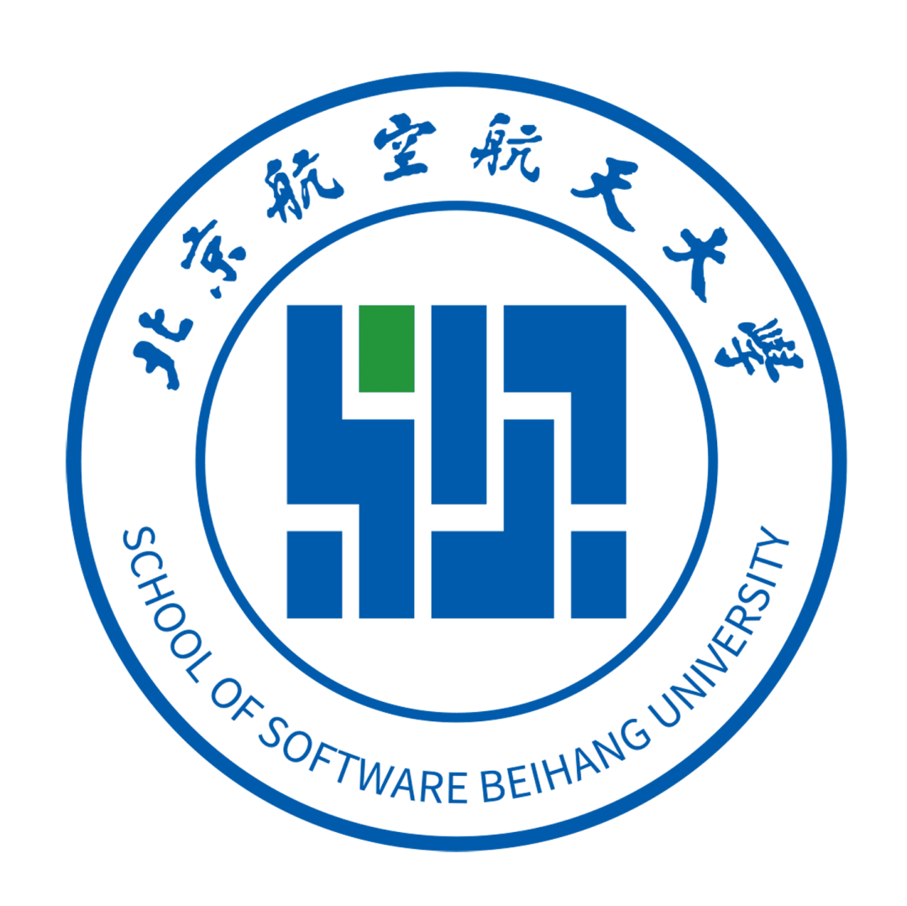